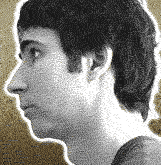
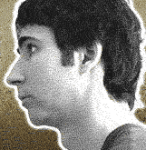

Season One · Season Two · Season Three · Season Four · Season Five · Season Six
Who can drink more beer?
The guys compete to see who can drink more beer - and puking means disqualification! Since Spenny's a much more experienced boozer, he's sure he has this one in the bag.
Who can stay naked longest?
When Kenny and Spenny see who can go longer without wearing any clothes, Spenny tries to overcome his shame of being
naked, while Kenny goes all-out in a bid to maximize his friend's embarrassment and discomfort.
Who has the biggest balls?
When Kenny and Spenny go head-to-head in a series of mini-competitions to see who has the biggest balls, Kenny goes
beyond the usual crazy stunts, trying to psyche Spenny out, by trying to expose him as a whining bitch.
Who do old people like more?
The boys each get to entertain a group of elderly ladies, who will then vote on whom they like better. Spenny tries to make the seniors feel loved and appreciated, while Kenny tugs on their heartstrings by conning them.
Who can dance the longest?
The guys compete in a torturous endurance dance marathon. Kenny has a diabolical plan that will leave Spenny paranoid,confused and humiliated.
First one to talk loses?
The rules are simple: the first guy to say a word loses; grunting is
allowed. Spenny tries to take advantage of the fact that Kenny talks in his
sleep. Can Kenny abuse Spenny without talking?
Who is funnier?
Spenny's strategy is to return to his stand-up comedy roots. Meanwhile,
Kenny, realizing the epic nature of the competition, decides to pull out all
the stops, and pulls off the meanest practical joke he has ever perpetrated
on Spenny.
Who can kiss more women?
Kenny uses deception in an attempt to slime as many kisses as humanly
possible. Spenny paranoid of catching herpes, uses a direct and honest
approach to get women to kiss him.
Who can win a rat race?
Kenny and Spenny go back to one of their oldest childhood competitions and
decide to race rodents. Will Kenny's rat-like tendencies help him win, or
will Spenny's disciplined coaching lead his rat to victory?
Who is the better journalist?
The boys compete to see who can break the
better news story. Spenny goes on a journey into his own personal heart of
darkness. Kenny, meanwhile, tries to generate some of his own news by
staging a tabloid media hoax.
Who can sell more bibles?
Kenny and Spenny square off to see who can sell more bibles. Kenny has a
brilliant plan to teach Spenny a moral biblical lesson that he will never
forget.
First one to be mean loses
In a total reversal of Kenny's
behavior, the guys compete to see who can go longer without being mean to
the other. Kenny attempts to overwhelm his best friend with a highly
suspicious onslaught of love and caring.
Who is the better rapper?
Spenny, who doesn't know much about rap, uses the opportunity to put out an educational message through his music. Kenny uses Spenny's ignorance of rap music against him, rapping his way to the final
showdown.
top
|

 
